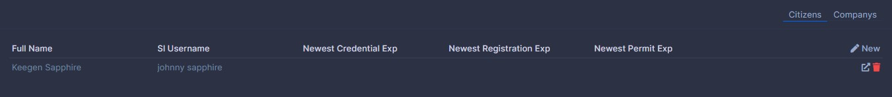
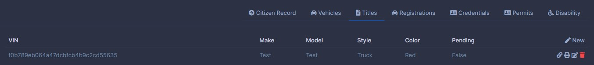
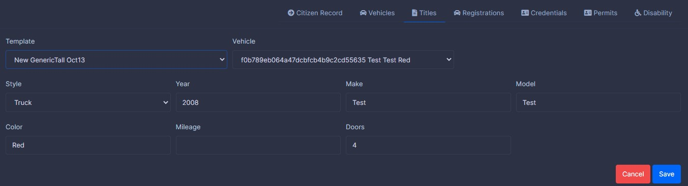
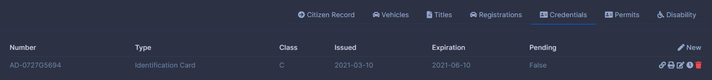
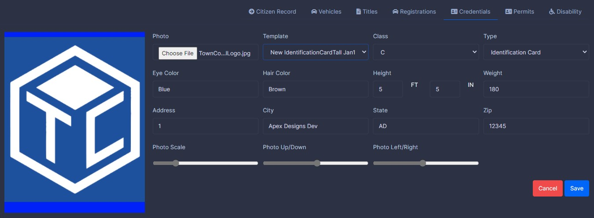
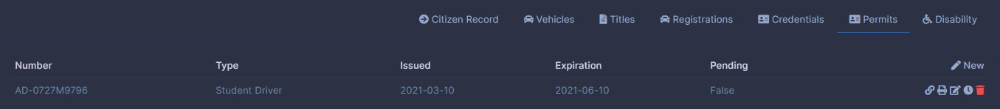
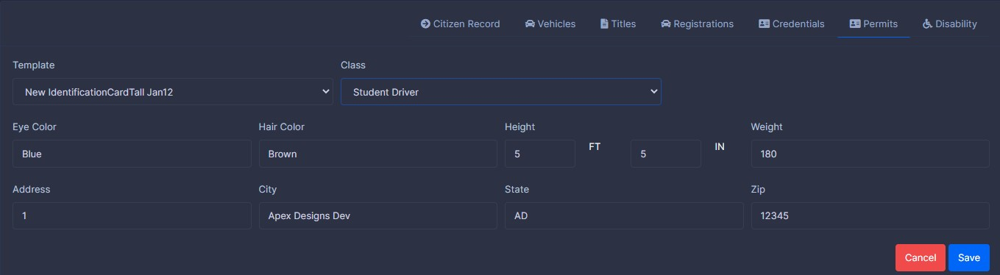
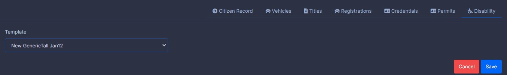

Citizens

Shown above is the citizens page with a selected citizen.
Introduction
TownControl V4 uses a unified social registration system.Each Citizen in the system has a shared social registration record, and a private Town Registration record. The social registration record is kept in sync by towns updating the user information. Each town can accept, deny, or report changes and will only be allied to their town if accepted. If you deny a request your town will be treated as out of sync and your changes to the citizens name will not be tracked globally. If a report is filed for inappropriate an admin will review it and revert the change if needed.
Creating a Town Registration
When you first land on the new citizens page you are only given a search box. This helps prevent duplicate data being entered. If the person was found in the social registration records they will be returned you should click the record to create your Town Registration. If they are not found you will be creating both the Social Registration Record and Town Registration record at the same time the SRN number will appear blank and fill once created. If you choice company a Social Registration will not be created. Enter all fields and click save.
Editing a Town Registration
Follow the steps above this time your record will state found in Town Registration click it and make the changes as required. Then click save.
Selecting a Town Registration
The same as above search for the person you wishing to select and click the Found in Town Registration link. This time leave the record untouched. You will see a new sidebar as soon as you select a Town Registration record. If you wish to select a different person click close.
Vehicles
Vehicles is new to TownControl V4 this is a primary list of vehicles the selected Town Registration owns. Mainly for added realism it useful to pre-fill Vehicle Registrations later on. However this area is not required. VIN is generated automatically.
Titles
Once again this is added for realism however you can print out titles to vehicles if your town owner has created a generic template.


Registrations
Registrations are used for printing license plates for vehicles. If you created a vehicle you can select it when creating or editing. Numbers left blank are generated automatically.

Credentials
Formerly Cards in version 3 Credentials offer a wider variety of default options. Photos can be resized and repositioned to ensure a proper fit. Numbers are generated automatically.


Permits
Permits are exactly the same as Credentials however they do not accept photos. Numbers are generated automatically.


Disability
The simplest of everything the only option for them are the template the numbers are generated automatically. These can be printed with a generic template.
